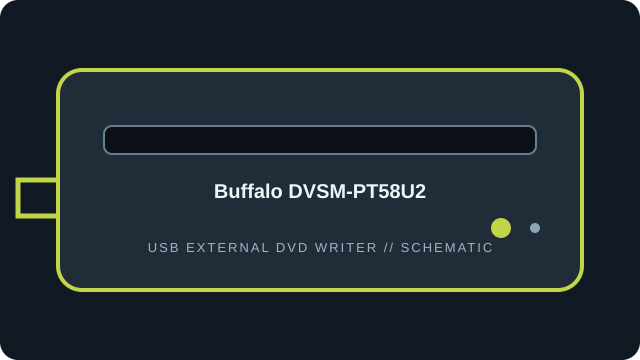

[ EXTERNAL DVD WRITERS // IDENTIFIED MODEL ]
Buffalo DVSM-PT58U2
Buffalo portable USB 2.0 DVD writer, model DVSM-PT58U2. Confirm the exact regional model code because Buffalo product bundles and suffixes vary.

IDENTIFICATION: Match the full model/suffix and any bundled part number against the unit label and cited manual. Rated maximums depend on media, firmware, and operating mode; read support is not write support.
Documented specifications
| Catalog subcategory | External DVD writers |
|---|---|
| Exact model | Buffalo DVSM-PT58U2 |
| Read media formats | CD-ROM, CD-R/RW; DVD-ROM, DVD±R/RW and DVD±R DL. DVD-RAM is not listed as supported for this model in the cited specification. |
| Rated read speeds | DVD-ROM/recordable DVD up to 8×; DVD±R DL up to 6×; CD-ROM/CD-R/RW up to 24×. |
| Write media formats | CD-R/RW; DVD±R, DVD±RW and DVD±R DL. |
| Rated write speeds | DVD±R up to 8×; DVD+RW up to 8×; DVD-RW up to 6×; DVD±R DL up to 6×; CD-R up to 24× and CD-RW up to 16×. |
| USB interface | External bus-powered USB 2.0; Buffalo’s supplied cable/power arrangement is model-specific. Do not infer USB 3.x performance from a newer host port. |
| OS / firmware compatibility | Buffalo documentation lists supported Windows and Mac host generations for the product period; bundled utilities may not run on current OS versions. Firmware/software downloads should be matched to DVSM-PT58U2; no separate firmware revision is claimed from the cited product page. |
| Model distinction | DVSM-PT58U2 is distinct from Buffalo’s DVSM-PL58U2; the PT model identifier should be visible on the underside label. |
Use, compatibility & preservation
- External bus-powered USB 2.0; Buffalo’s supplied cable/power arrangement is model-specific. Do not infer USB 3.x performance from a newer host port.
- Buffalo documentation lists supported Windows and Mac host generations for the product period; bundled utilities may not run on current OS versions. Firmware/software downloads should be matched to DVSM-PT58U2; no separate firmware revision is claimed from the cited product page.
- DVSM-PT58U2 is distinct from Buffalo’s DVSM-PL58U2; the PT model identifier should be visible on the underside label.
- Record drive model and reported firmware, host OS, USB controller, application version, disc format, media brand and any read or verification errors when imaging.
- Keep checksummed image copies and logs; store discs in cases away from heat, moisture and direct sunlight. Avoid adhesive labels, abrasives and undocumented solvents.
Firmware support is model-specific: do not cross-flash a related product family or infer an update from an adjacent suffix.
Sources
- Buffalo DVSM-PT58U2 — product pageManufacturer product page for the exact portable DVD writer model.
- Buffalo DVSM-PT58U2 manualsBuffalo Japan support/manual locator for the exact model; documentation may be in Japanese.